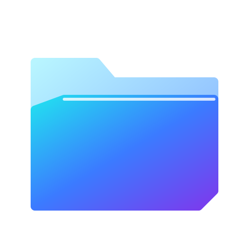
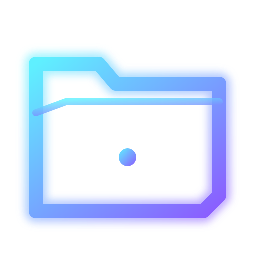
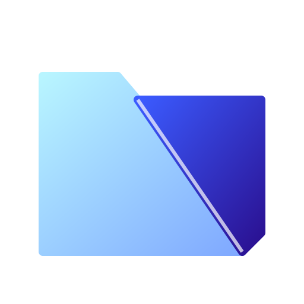
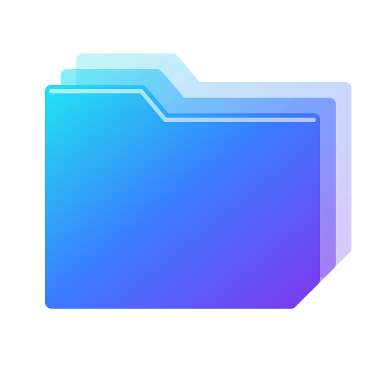
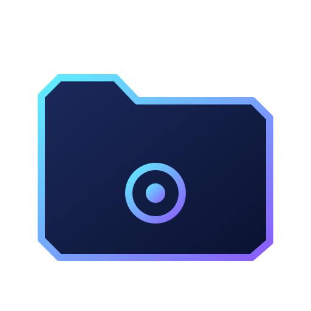

F1 — pasta chanfrada em duas placas

F2 — contorno neon

F3 — facetas (low-poly)

F4 — três placas em profundidade
F5 — pasta com fenda de luz e folha saindo

F6 — pasta octogonal escura com núcleo